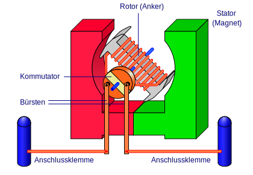
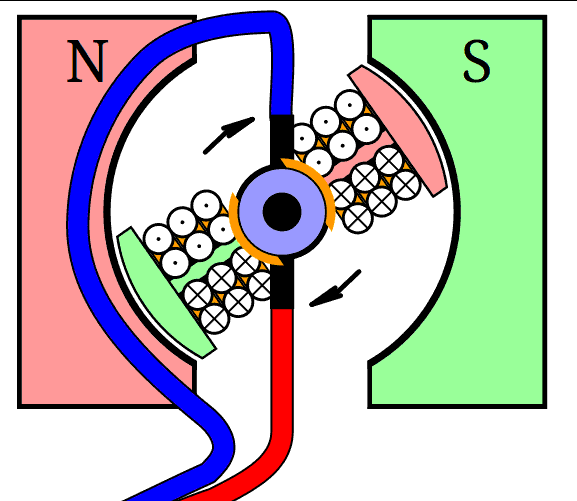

⚙️ Aufbau & Komponenten
Kernaussage: Ein Gleichstrommotor wandelt elektrische Energie in mechanische Energie um.
Hauptbestandteile:
- Stator: Erzeugt das statische Magnetfeld
- Rotor (Anker): Beweglicher Teil mit stromdurchflossener Spule
- Kommutator: "Stromwender", kehrt die Stromrichtung im Rotor periodisch um
- Bürsten: Stellen den elektrischen Kontakt zwischen Stromquelle und Kommutator her

💡 Funktionsweise
- Stromfluss im Rotor erzeugt eigenes Magnetfeld
- Wechselwirkung mit Statormagnetfeld führt zur Lorentzkraft
- Lorentzkraft erzeugt Drehmoment → Rotor dreht sich
- Kommutator sorgt für kontinuierliche Drehbewegung durch Umpolung

📝 Formeln
$$ M = B \cdot I \cdot A \cdot N \cdot \sin(\alpha) $$
\(M\): Drehmoment (Nm)
\(B\): Flussdichte (T)
\(I\): Strom (A)
\(A\): Spulenfläche (m²)
\(N\): Windungszahl
\(\alpha\): Winkel zwischen Feld und Spulennormale
\(B\): Flussdichte (T)
\(I\): Strom (A)
\(A\): Spulenfläche (m²)
\(N\): Windungszahl
\(\alpha\): Winkel zwischen Feld und Spulennormale
$$ U_{\text{ind}} = B \cdot l \cdot v $$
\(U_{\text{ind}}\): induzierte Spannung (V)
\(l\): Länge des Leiters (m)
\(v\): Geschwindigkeit (m/s)
\(l\): Länge des Leiters (m)
\(v\): Geschwindigkeit (m/s)
$$ P_{\text{el}} = U \cdot I $$
\(P_{\text{el}}\): elektrische Leistung (W)
\(U\): Spannung (V)
\(I\): Strom (A)
\(U\): Spannung (V)
\(I\): Strom (A)
$$ P_{\text{mech}} = M \cdot \omega $$
\(P_{\text{mech}}\): mechanische Leistung (W)
\(M\): Drehmoment (Nm)
\(\omega\): Winkelgeschwindigkeit (rad/s)
\(M\): Drehmoment (Nm)
\(\omega\): Winkelgeschwindigkeit (rad/s)
$$ n = \frac{\omega}{2\pi} $$
\(\omega\): Winkelgeschwindigkeit (rad/s)
\(n\): Drehzahl (Hz)
\(n\): Drehzahl (Hz)
🔌 Anwendungen
- Werkzeuge: Bohrmaschinen, Akkuschrauber
- Haushalt: Ventilatoren, Mixer
- Modellbau: Modellfahrzeuge
- Industrie: Förderbänder, Pumpen
- Mobilität: E-Fahrzeuge, Servolenkung
⚖️ Vor- und Nachteile
Vorteile
- Einfacher, günstiger Aufbau
- Gutes Anlaufverhalten
- Einfache Drehzahlsteuerung durch Spannung
- Hoher Wirkungsgrad
- Gute Regelbarkeit
Nachteile
- Bürstenverschleiß
- Begrenzte Lebensdauer
- Geräuschentwicklung
- Elektromagnetische Störungen möglich
- Geringere Leistungsdichte als bürstenlose Gleichstrommotoren